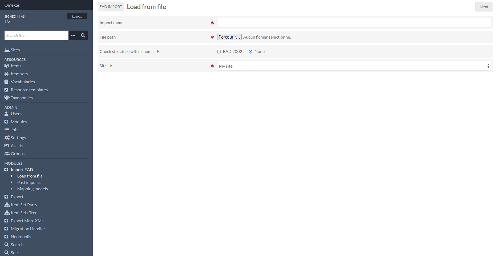
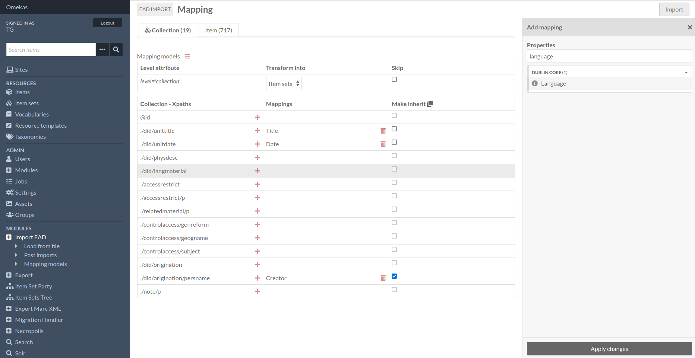
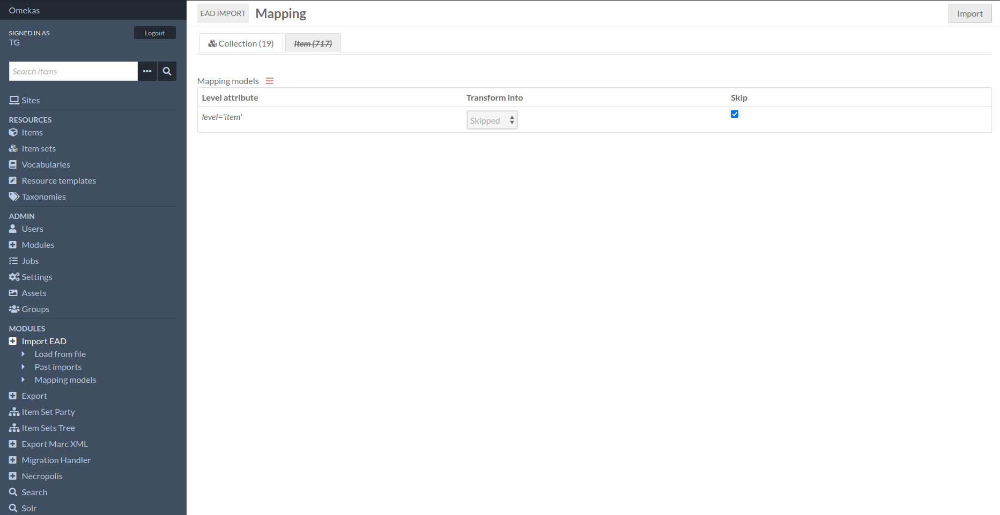

Tutoriels
Configuration d’un nouvel import
Lorsque vous lancez une nouvelle importation, une fois que vous avez défini le nom et le chemin d’accès du du fichier XML, vous pouvez vérifier sa structure en fonction de la norme « « EAD 2002 » » schéma et affecter son contenu à un site particulier.
Lors de la soumission de ce premier formulaire, vous définissez les mappings des nœuds xml xml trouvés (nous avons spécifié une liste de nœuds dans le module). Une ou plusieurs propriétés peuvent prendre la valeur du nœud sélectionné.
Each tab will represent the value of the « level » attribute of each <c> tag. You choose the type of resource produced by each tab, with the option of completely ignoring the tab and the resulting resources.
Chaque onglet représentera la valeur de l’attribut niveau de chaque <c>. Vous choisissez le type de ressource produit par chaque onglet, avec la » « possibilité d’ignorer complètement l’onglet et les ressources qui en résultent d’ignorer complètement l’onglet et les ressources qui en résultent.
Le lien entre les ressources est alors automatiquement établi par les propriétés dcterms:isPartOf et dcterms:hasPart.